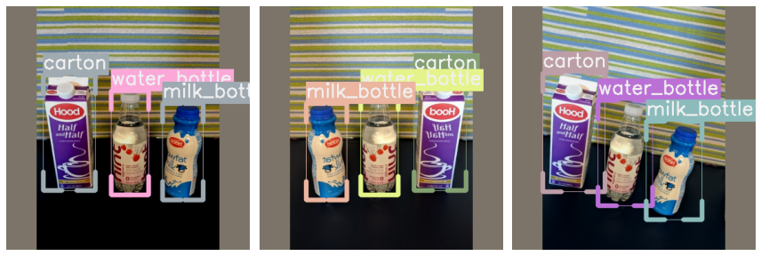
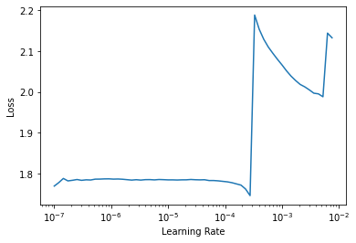

Quickstart Using RetinaNet
RetinaNet: Focal Loss for Dense Object Detection

Introduction
This tutorial walk you through the different steps of training the fridge dataset. the IceVision Framework is an agnostic framework. As an illustration, we will train our model using both the fastai library, and pytorch-lightning libraries.
For more information about how the fridge dataset as well as its corresponding parser check out the fridge folder in icedata.
Installing IceVision and IceData
# !pip install icevision[all] icedata
!pip install git+git://github.com/airctic/icevision.git#egg=icevision[all] icedata --upgrade
Imports
from icevision.all import *
Datasets : Fridge Objects dataset
Fridge Objects dataset is tiny dataset that contains 134 images of 4 classes: - can, - carton, - milk bottle, - water bottle.
IceVision provides very handy methods such as loading a dataset, parsing annotations, and more.
# Loading Data
url = "https://cvbp-secondary.z19.web.core.windows.net/datasets/object_detection/odFridgeObjects.zip"
dest_dir = "fridge"
data_dir = icedata.load_data(url, dest_dir)
# Parser
class_map = ClassMap(["milk_bottle", "carton", "can", "water_bottle"])
parser = parsers.voc(annotations_dir=data_dir / "odFridgeObjects/annotations",
images_dir=data_dir / "odFridgeObjects/images",
class_map=class_map)
# Records
train_records, valid_records = parser.parse()
HBox(children=(HTML(value=''), FloatProgress(value=0.0, max=20380998.0), HTML(value='')))
HBox(children=(HTML(value=''), FloatProgress(value=0.0, max=128.0), HTML(value='')))
[1m[1mINFO [0m[1m[0m - [1m[34m[1mAutofixing records[0m[1m[34m[0m[1m[0m | [36micevision.parsers.parser[0m:[36mparse[0m:[36m124[0m
Visualization
Showing a batch of images with their corresponding boxes and labels
show_records(train_records[:3], ncols=3, class_map=class_map)

Train and Validation Dataset Transforms
# Transforms
train_tfms = tfms.A.Adapter([*tfms.A.aug_tfms(size=384, presize=512), tfms.A.Normalize()])
valid_tfms = tfms.A.Adapter([*tfms.A.resize_and_pad(384), tfms.A.Normalize()])
# Datasets
train_ds = Dataset(train_records, train_tfms)
valid_ds = Dataset(valid_records, valid_tfms)
Displaying the same image with different transforms
Note:
Transforms are applied lazily, meaning they are only applied when we grab (get) an item. This means that, if you have augmentation (random) transforms, each time you get the same item from the dataset you will get a slightly different version of it.
samples = [train_ds[0] for _ in range(3)]
show_samples(samples, ncols=3, class_map=class_map)

DataLoader
# DataLoaders
train_dl = retinanet.train_dl(train_ds, batch_size=16, num_workers=4, shuffle=True)
valid_dl = retinanet.valid_dl(valid_ds, batch_size=16, num_workers=4, shuffle=False)
batch, samples = first(train_dl)
show_samples(samples[:6], class_map=class_map, ncols=3)

Model
model = retinanet.model(num_classes=len(class_map))
Downloading: "https://download.pytorch.org/models/retinanet_resnet50_fpn_coco-eeacb38b.pth" to /root/.cache/torch/hub/checkpoints/retinanet_resnet50_fpn_coco-eeacb38b.pth
HBox(children=(HTML(value=''), FloatProgress(value=0.0, max=136595076.0), HTML(value='')))
Metrics
metrics = [COCOMetric(metric_type=COCOMetricType.bbox)]
Training
IceVision is an agnostic framework meaning it can be plugged to other DL framework such as fastai2, and pytorch-lightning.
You could also plug to oth DL framework using your own custom code.
Training using fastai
learn = retinanet.fastai.learner(dls=[train_dl, valid_dl], model=model, metrics=metrics)
learn.freeze()
learn.lr_find()
/usr/local/lib/python3.6/dist-packages/torch/nn/_reduction.py:44: UserWarning: size_average and reduce args will be deprecated, please use reduction='sum' instead.
warnings.warn(warning.format(ret))
SuggestedLRs(lr_min=2.7542287716642023e-05, lr_steep=0.0003311311302240938)

learn.fine_tune(50, 3e-4, freeze_epochs=1)
| epoch | train_loss | valid_loss | COCOMetric | time |
|---|---|---|---|---|
| 0 | 1.773187 | 1.721653 | 0.000000 | 00:06 |
/usr/local/lib/python3.6/dist-packages/torch/nn/_reduction.py:44: UserWarning: size_average and reduce args will be deprecated, please use reduction='sum' instead.
warnings.warn(warning.format(ret))
| epoch | train_loss | valid_loss | COCOMetric | time |
|---|---|---|---|---|
| 0 | 1.669240 | 1.604600 | 0.000000 | 00:07 |
| 1 | 1.511697 | 1.204714 | 0.013421 | 00:07 |
| 2 | 1.351895 | 1.066002 | 0.013898 | 00:07 |
| 3 | 1.231514 | 0.937882 | 0.017117 | 00:07 |
| 4 | 1.140697 | 0.878017 | 0.038607 | 00:07 |
| 5 | 1.070421 | 0.831975 | 0.037769 | 00:07 |
| 6 | 1.009788 | 0.793019 | 0.111913 | 00:07 |
| 7 | 0.960639 | 0.728101 | 0.119228 | 00:07 |
| 8 | 0.912715 | 0.671543 | 0.146560 | 00:07 |
| 9 | 0.870147 | 0.626667 | 0.171220 | 00:07 |
| 10 | 0.832594 | 0.599739 | 0.203036 | 00:07 |
| 11 | 0.797179 | 0.589813 | 0.218498 | 00:07 |
| 12 | 0.762873 | 0.552396 | 0.239216 | 00:06 |
| 13 | 0.736472 | 0.571118 | 0.228611 | 00:06 |
| 14 | 0.708510 | 0.524506 | 0.298357 | 00:06 |
| 15 | 0.684319 | 0.510075 | 0.288280 | 00:06 |
| 16 | 0.660906 | 0.455961 | 0.443214 | 00:06 |
| 17 | 0.635326 | 0.470874 | 0.428143 | 00:06 |
| 18 | 0.617463 | 0.439645 | 0.461565 | 00:06 |
| 19 | 0.596102 | 0.432902 | 0.466235 | 00:06 |
| 20 | 0.573141 | 0.391897 | 0.503541 | 00:06 |
| 21 | 0.554290 | 0.395687 | 0.559103 | 00:06 |
| 22 | 0.537533 | 0.374369 | 0.616710 | 00:06 |
| 23 | 0.521039 | 0.353456 | 0.582087 | 00:06 |
| 24 | 0.500212 | 0.365042 | 0.588221 | 00:06 |
| 25 | 0.481130 | 0.380503 | 0.578897 | 00:06 |
| 26 | 0.461111 | 0.311713 | 0.671479 | 00:06 |
| 27 | 0.443895 | 0.273624 | 0.755427 | 00:06 |
| 28 | 0.426764 | 0.292557 | 0.726729 | 00:06 |
| 29 | 0.410741 | 0.273373 | 0.743065 | 00:06 |
| 30 | 0.395672 | 0.263620 | 0.731577 | 00:06 |
| 31 | 0.381944 | 0.254182 | 0.779902 | 00:06 |
| 32 | 0.364849 | 0.255048 | 0.778393 | 00:06 |
| 33 | 0.353671 | 0.262039 | 0.758704 | 00:06 |
| 34 | 0.343300 | 0.250880 | 0.787915 | 00:06 |
| 35 | 0.332495 | 0.230082 | 0.807588 | 00:06 |
| 36 | 0.320344 | 0.219029 | 0.819196 | 00:06 |
| 37 | 0.311264 | 0.238515 | 0.781773 | 00:06 |
| 38 | 0.301364 | 0.209411 | 0.824190 | 00:06 |
| 39 | 0.291357 | 0.209720 | 0.831019 | 00:06 |
| 40 | 0.282660 | 0.206470 | 0.845421 | 00:06 |
| 41 | 0.274021 | 0.201741 | 0.845945 | 00:06 |
| 42 | 0.267398 | 0.198581 | 0.836714 | 00:06 |
| 43 | 0.259853 | 0.201253 | 0.836890 | 00:06 |
| 44 | 0.254091 | 0.200994 | 0.844222 | 00:06 |
| 45 | 0.247125 | 0.196282 | 0.852836 | 00:06 |
| 46 | 0.242366 | 0.195580 | 0.850415 | 00:06 |
| 47 | 0.237883 | 0.196337 | 0.842754 | 00:06 |
| 48 | 0.234541 | 0.196949 | 0.841875 | 00:06 |
| 49 | 0.232748 | 0.197014 | 0.841945 | 00:06 |
Training using Lightning
class LightModel(retinanet.lightning.ModelAdapter):
def configure_optimizers(self):
return SGD(self.parameters(), lr=1e-2)
light_model = LightModel(model, metrics=metrics)
trainer = pl.Trainer(max_epochs=40, gpus=1)
trainer.fit(light_model, train_dl, valid_dl)
Inference
Predicting a batch of images
Instead of predicting a whole list of images at one, we can process small batch at the time: This option is more memory efficient.
infer_dl = retinanet.infer_dl(valid_ds, batch_size=8)
samples, preds = retinanet.predict_dl(model, infer_dl)
show_preds(
samples=samples[:6],
preds=preds[:6],
class_map=class_map,
denormalize_fn=denormalize_imagenet,
ncols=3,
)

Saving Model on Google Drive
from google.colab import drive
drive.mount('/content/gdrive', force_remount=True)
root_dir = Path('/content/gdrive/My Drive/')
torch.save(model.state_dict(), root_dir/'icevision/models/fridge/fridge_retinanet_fpn50.pth')
Mounted at /content/gdrive
Happy Learning!
If you need any assistance, feel free to join our forum.